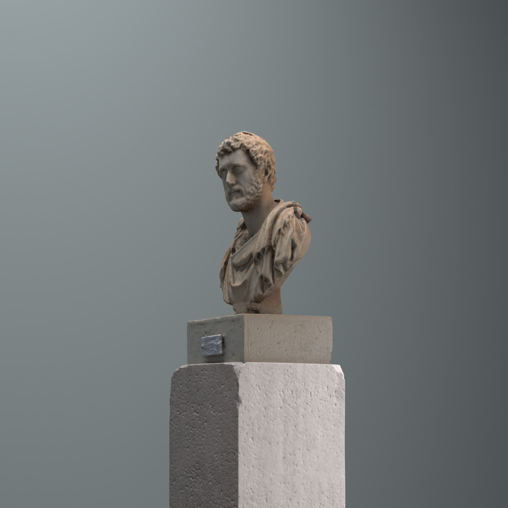
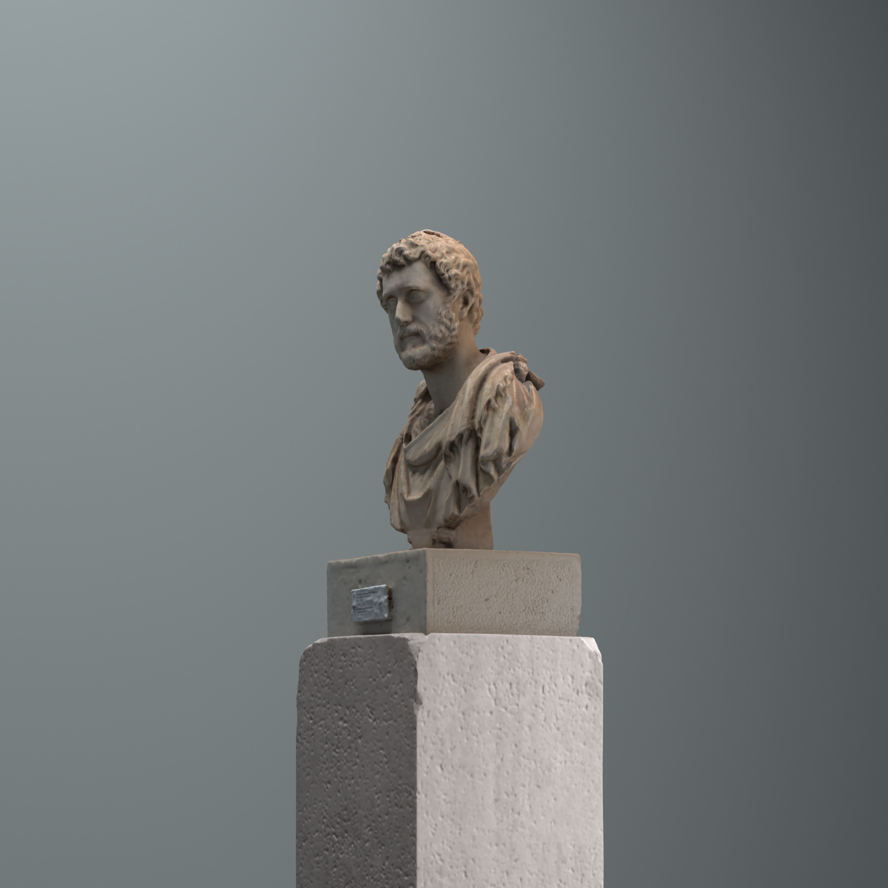

Welcome
Three Powerful Men of the Ancient World
Alexander the Great (356-323 BCE), king of Macedon, was a brilliant military strategist and diplomat who conquered a vast empire, spreading Greek culture across three continents.
Marcus Aurelius (121-180 CE), Roman emperor, was a renowned Stoic philosopher whose personal writings, the Meditations, offer profound insights into virtue and self-discipline.
Antoninus Pius (86-161 CE) was a Roman emperor who presided over a period of peace and prosperity. Known for his justice and moderation, Antoninus was dedicated to efficient administration and improving the lives of his subjects.
These men left enduring legacies, shaping the political and cultural landscapes of their times and continuing to inspire generations with their leadership and wisdom.
 
